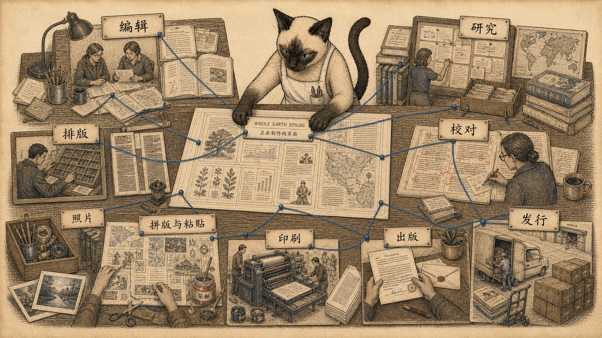

模块 01
制作人员：一本书不是一个人的声音
编辑、研究、文字编辑、办公室、排版、摄影、贴版、索引、校对、印刷和发行，共同组成了这本书的声音。
先看图：未完成书页旁边不是一位作者，而是一张生产桌：编辑、研究流、排版条、校对符号、贴版板、摄影盘、印刷滚筒和发行箱都连在一起。
有趣的是：《尾声》 尾部把各章编辑也列出来。土地使用、住所、软技术、手艺、共同体、游牧、学习都有负责者。
为什么重要：正式中文版也应保留这种多人劳动感。《全球概览》 的“声音”更像一套协作系统，而不是单一作者的口吻。